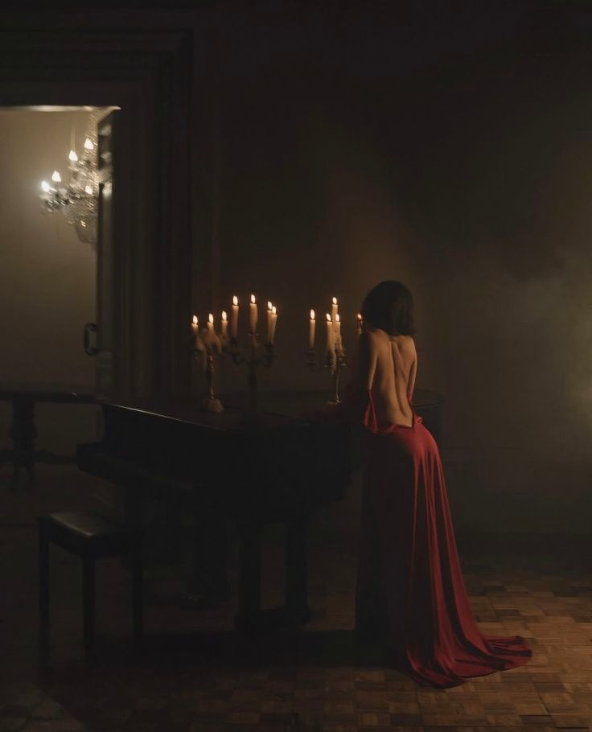

Kelimelerin gücüne ve karanlığın içinde saklanan gerçeklere inanıyorum. Gündüzleri sıradan bir dünyanın parçasıyken, geceleri yeraltı dünyasının, tehlikeli karakterlerin ve kırık zihinlerin hikayelerini yazıyorum.
Kalemimden dökülen her satır, okuyucuyu güvenli sınırlarının dışına çıkarmayı ve psikolojik bir labirentin içine çekmeyi amaçlıyor. KAÇ, MARA ve Kırık Zihinler evrenlerinde, sadece hayatta kalanların değil, aynı zamanda karanlığı kucaklayanların hikayesini bulacaksınız.
Eğer gölgelerden korkmuyorsanız, doğru yerdesiniz.